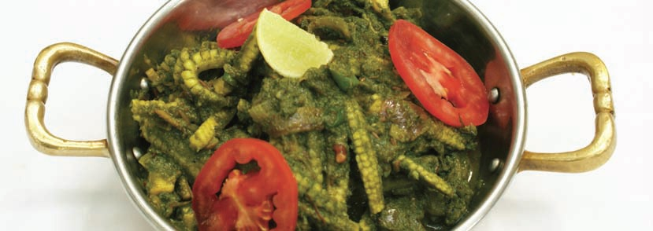
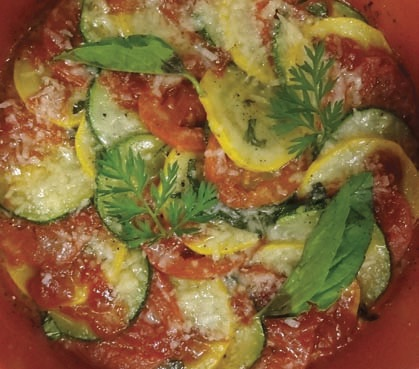

|
|
BABY CORN HARA MASALA
 |
INGREDIENTS
1 cup Baby corn, cut into 4 lengthwise
1 tsp Lemon juice
1 tsp Sugar
2 tbsp Oil
Salt to taste
TO BE GROUND TO A PASTE
1 cup Chopped coriander
½" pc Ginger
2 cloves Garlic
1 Green chilli
1 Onion, chopped
1 tsp Cumin seeds
FOR GARNISHING
1 tbsp Sliced tomatoes
4 Lemon wedges
METHOD
In a glass bowl, add the oil and the prepared paste.
Microwave on HIGH for 1 minute. Add baby corn, salt
and 2tbsp of water. Mix well. Microwave, covered, on
HIGH for 6 minutes. Add lemon juice and sugar. Mix
well. Garnish with sliced tomatoes and lemon
wedges. Serve hot. |
|
|
BADAMI PANEER
|
INGREDIENTS
3/4 cup Paneer, cut into ½" cubes
¼ cup Tomato purée, ready-made
½ tsp Chilli powder
¼ tsp Garam masala
¼ tsp Cumin powder
¼ tsp Coriander powder
1 tbsp Cream/milk
3 tbsp Oil
A pinch of turmeric powder
A pinch of sugar
Salt to taste
TO BE GROUND TO A SMOOTH PASTE
10 Almonds
2 Whole dry Kashmiri red chillies
¼ cup Roughly chopped onions
½" pc Ginger
½ tsp Roughly chopped garlic
FOR GARNISHING
½ tbsp Ginger juliennes
½ tbsp Chopped coriander
METHOD
Combine paneer, turmeric powder, ¼tsp chilli
powder, 1tsp oil and salt in a microwave-proof plate.
Mix well. Microwave on HIGH for 40 seconds. Keep
aside. Combine the remaining oil and the prepared
paste in a microwave-proof bowl. Microwave,
covered, on HIGH for 3 minutes, stirring once inbetween
after 1½ minutes. Add tomato purée,
remaining chilli powder, garam masala, cumin
powder, coriander powder and salt. Mix well.
Microwave on HIGH for 2 minutes. Add paneer,
cream/milk and sugar. Microwave on HIGH for 1
minute. Garnish with ginger and coriander. Serve hot. |
|
|
ZUCCHINI, ONION & TOMATO FLAN
 |
INGREDIENTS
100 gm Green zucchini
100 gm Yellow zucchini
100 gm Tomatoes
50 gm Parmesan cheese, grated
5 gm Crushed black pepper
5 gm Chopped basil leaves
10 ml Olive oil
5 gm Butter
1 tbsp Tomato sauce, ready-made
1 tbsp Tomato ketchup, ready-made
2 gm Salt
METHOD
Slice zucchini in ¼cm thickness. Slice the tomatoes.
In a mixing bowl, add sliced zucchini, add half of
grated Parmesan, crushed black pepper, chopped
basil leaves, olive oil. Mix gently. Take a baking dish,
apply soft butter. Arrange the zucchini slices in a
circular pattern, green
and yellow alternately,
with tomato slices
placed in-between them.
Sprinkle ¼ of the
Parmesan. Microwave
for 2 minutes. Check
cooking after 1 minute
and rotate the baking
dish. Take out the baking
dish. Sprinkle the rest of
the Parmesan and a few
fresh basil leaves. Dot
with tomato sauce and
tomato ketchup. |
|
|

|
|
.jpg)